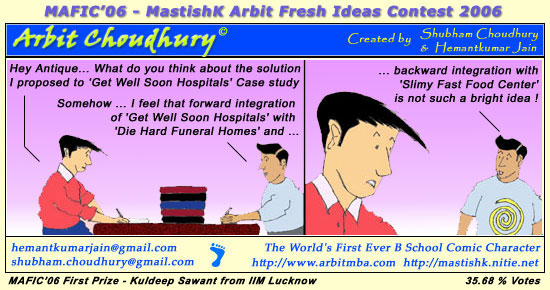
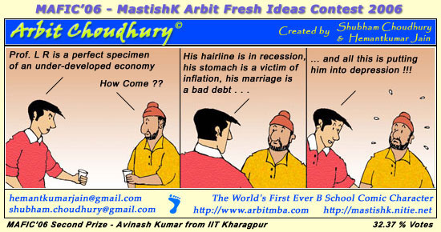
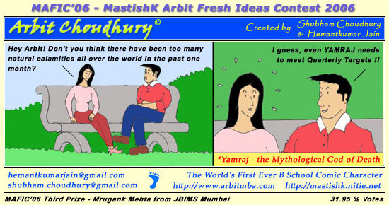

MastishK – Arbit Fresh Ideas Contest 2006 (MAFIC’06)
The third edition of MastishK, India's 1st Fully & Truly Online Business Challenge, organized by the management students on NITIE, was held in Oct'06.
As an added attraction and continuing with our tradition from 2005, MastishK Arbit Fresh Ideas Contest was organized as a part of MastishK '06, where Arbit Choudhury fans could send in their Arbit ideas, and the best ideas would feature in Arbit Choudhury comic strips.
We received loads of ideas during the contest. We put the ideas through our CS3 (Comic Strip Suitability Scale) and the Top 3 ideas were converted into Comic Strips. The participants of MastishK 2006 decided the 1st, 2nd and 3rd prize winning ideas through an online vote.
And the Winners are ...
1st Prize - Kuldeep Sawant, IIM Lucknow
2nd Prize - Avinash Kumar, IIT Kharagpur
3rd Prize - Mrugank Mehta, JBIMS Mumbai



Congratulations to all three from Team Arbit ! The competition between the three was close with a small difference in the percentage of votes each got. It was a close call and all three were almost equally good :-).
As in every contest, there are winners, but its participation that matters. There were some ideas which although did not make it to the top 3, were definitely interesting and will feature in Arbit Choudhury Strips during the coming year. These ideas were contributed by:
1. Sachin Karnik, SIMSR, Mumbai
2. Satyam Chandra, IMT Ghaziabad
3. Piyush Dwivedi, IIM Indore
4. Hitesh Raghav, FMS Delhi
5. Sonal Jhuj, MICA Ahmedabad
6. Arunava Banerjee, NITIE Mumbai
7. Shahul Hameed, Ashok Leyland
Thanks to all of you. Watch out for your ideas in comic strips released in the coming year…
|